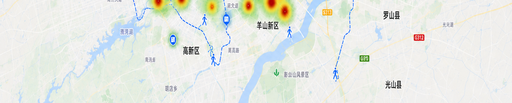
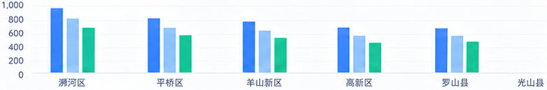
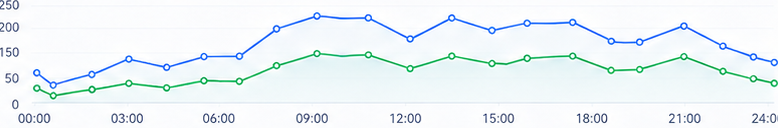

事件处置率
92.6%
较上周 +3.2%



| 排名 | 区域 | 处置率 | 平均时长 | 闭环率 | 趋势 |
|---|---|---|---|---|---|
| 1 | 澜河区 |
95.1%
|
34分钟 |
96.3%
|
|
| 2 | 平桥区 |
93.2%
|
38分钟 |
94.8%
|
|
| 3 | 羊山新区 |
91.3%
|
41分钟 |
93.6%
|
|
| 4 | 高新区 |
89.6%
|
44分钟 |
92.1%
|
|
| 5 | 罗山县 |
88.4%
|
47分钟 |
90.7%
|
|
| 6 | 光山县 |
86.2%
|
46分钟 |
87.4%
|
|
| 7 | 息县 |
84.1%
|
49分钟 |
85.2%
|
|
| 8 | 潢川县 |
82.7%
|
51分钟 |
84.6%
|
|
| 9 | 淮滨县 |
81.3%
|
52分钟 |
83.1%
|
|
| 10 | 固始县 |
79.8%
|
54分钟 |
81.9%
|
|
| 11 | 商城县 |
77.6%
|
55分钟 |
80.4%
|
|
| 12 | 新县 |
75.9%
|
57分钟 |
78.6%
|